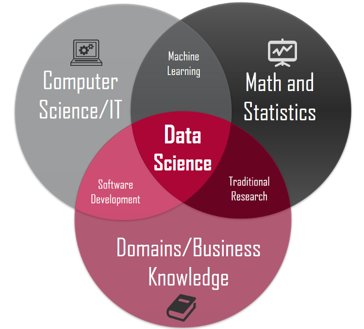
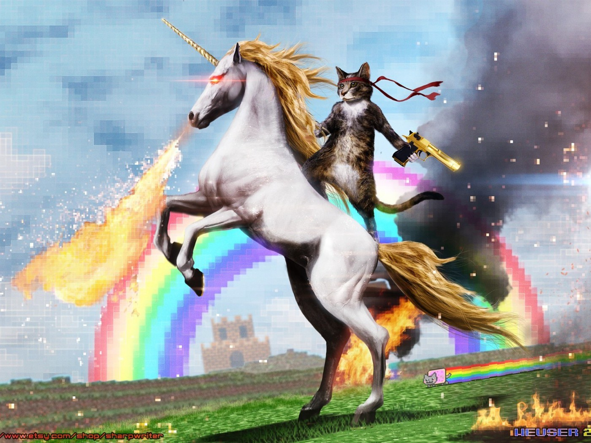
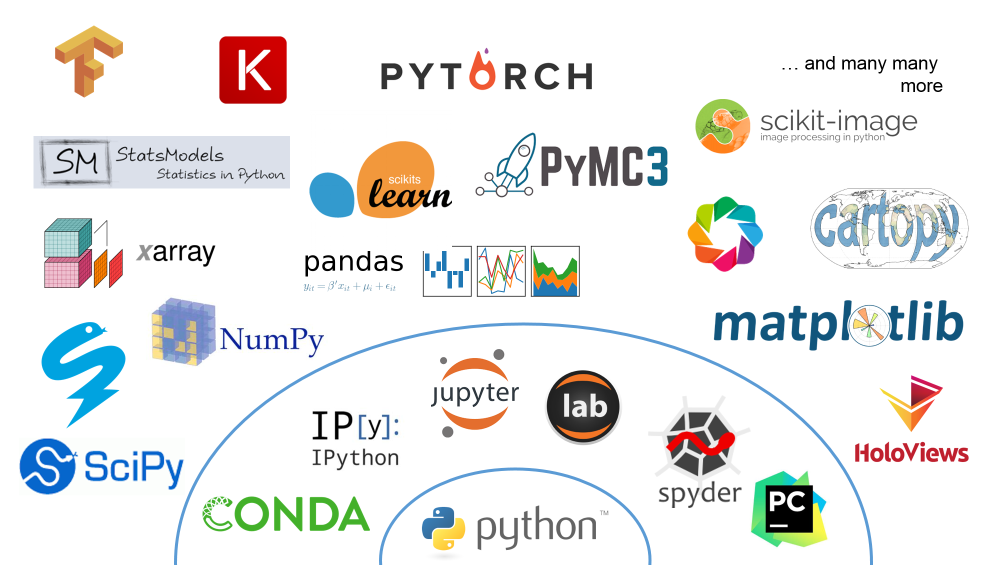

class: center, middle # Data Science Track --- # Agenda ### 1. What is Data Science? ### 2. Skills and Requirements ### 3. Learning Goals ### 4. Software and Tools ### 5. Capstone Project ### 6. Learning Resources ### 7. Schedule --- # What is Data Science? _Data science [...] is an **interdisciplinary field of scientific methods, processes, and systems** to extract **knowledge or insights from data**[...]_ ([Wikipedia](https://en.wikipedia.org/wiki/Data_science)) --- # What is Data Science? _Data science [...] is an **interdisciplinary field of scientific methods, processes, and systems** to extract **knowledge or insights from data**[...]_ ([Wikipedia](https://en.wikipedia.org/wiki/Data_science)) _It employs techniques and theories drawn from many fields within the broad areas of_ * _mathematics_, * _statistics_, * _information science_, and * _computer science_, in particular from the subdomains of * _machine learning_, * _classification_, * _cluster analysis_, * _data mining_, * _databases_, and * _visualization._ --- # Skills and Requirements  Source: [Michael Barber](https://towardsdatascience.com/introduction-to-statistics-e9d72d818745) (inspired by [Drew Conway's blog post in 2010](http://drewconway.com/zia/2013/3/26/the-data-science-venn-diagram)) --- # Skills and Requirements ### The Data Science Unicorn  Source: [hdbilder.eu](http://www.hdbilder.eu/p/494032/1400/1050) --- # Skills and Requirements ### The Python Ecosystem (Data Science or Scientific stack)  Modified after [Jake VanderPlas, 2016](https://speakerdeck.com/jakevdp/pythons-data-science-stack-jsm-2016) --- # Learning Goals * #### Setting up a computational environment for data science projects * #### Basic skills using git * #### Basic+ skills using Python * #### Navigating the Python ecosystem (data science stack) * #### Literate Programming using Jupyter Notebooks * #### Code refactoring * #### Exploratory Data Analysis (EDA) * #### Predictive Modeling (Machine Learning) * #### Generating reports --- # Software and Tools #### Computational environment: * ##### Python 3.6, `conda` package manager, IDE (e.g. Spyder, Atom or PyCharm) #### Version control * ##### `git` and github #### Python ecosystem * ##### `numpy`, `pandas`, `matplotlib` and `scikit-learn`, among others #### Literate Programming * ##### Jupyter Notebooks and Markdown #### Reporting * ##### `nbconvert` and `nbsphinx` --- # Capstone Project ### Run a data science project on a real world data set Data source: [kaggle datasets](https://www.kaggle.com/datasets) * Pick a dataset of interest (Regression, Classification, Time Series Analysis, Recommender System, Natural Language Processing, ...) * EDA and data cleansing * Find an interesting question and apply machine learning algorithm(s) to answer the question * Model selection * Hyperparameter tuning * Reporting and visualization of the model results * Generate a html-based report --- # Learning Resources I (Coding) An extensive list of learning resources is made available on [github](https://github.com/CreateCodeLearn/data-science-track/blob/master/learning_resources.md). In order to get started with __Python__ we in particular recommend the resources listed below: * Python course [@Codeacademy](https://www.codecademy.com/tracks/python) * _Programming for Everybody_ [@Coursera](https://www.coursera.org/learn/python) * _Introduction to Computer Science and Programming Using Python_ [@EdX](https://www.edx.org/course/introduction-computer-science-mitx-6-00-1x-11) * _Intro to Python for Data Science_ [@Datacamp](https://www.datacamp.com/courses/intro-to-python-for-data-science) --- # Learning Resources II (Statistics) If you feel somehow comfortable with Python try to get familiar with the buzzwords below: * Population and sampling statistics * Central Limit Theorem and confidence intervals * Multivariate statistics * Predictive modeling and machine learning * Supervised Learning * Linear Regression and Logistic Regression * Regularization * Overfitting * Bias-Variance trade-off * Model selection * Decision Trees and Random Forests * Model Evaluation --- # Schedule for the self learning period ### Week 1 (13/04-20/04) * [Fri 20/04] Introduction to Python and the Python Ecosystem ### Week 2 (20/04-27/04) * [Fri 27/04] Introduction to Statistics and Machine Learning